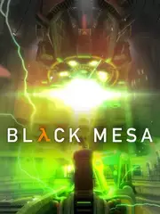

 |
|
| Tiempo de juego | 35m 52s |
| Última actividad | 16/1/2026 12:08:01 |
| Añadido | 17/11/2025 17:54:45 |
| Modificado | 21/11/2025 14:14:40 |
| Estado de finalización | Jugado |
| Librería | Playnite |
| Fuente | |
| Plataforma | PC (Windows) |
| Fecha de lanzamiento | 6/3/2020 |
| Puntuación de la Comunidad | 87 |
| Puntuación de la Crítica | 88 |
| Puntuación de usuario | |
| Género | Adventure Indie Shooter |
| Desarrollador | Crowbar Collective |
| Editor | Crowbar Collective |
| Característica | Multiplayer Single Player |
| Enlaces | Steam Official Website |
| Tag | |
Para entender por qué "Black Mesa" es una obra de amor y rebeldía, primero hay que hablar del "Half-Life: Source". Ese fue el intento "oficial" de Valve de actualizar su clásico, pero fue un port hecho con dos pesos y sin ganas. Tiraron los mapas y modelos viejos adentro del motor Source, y el resultado fue un Frankenstein raro: la iluminación original se rompió, la inteligencia artificial de los enemigos se hizo mierda y se llenó de bugs nuevos. Era un chamuyo que solo tenía agua más linda. La comunidad, indignada, dijo "basta" y se propuso hacer el laburo en serio. Y así nació "Black Mesa": un remake completo del legendario Half-Life, hecho desde cero por fanáticos con un nivel de talento y respeto que asusta.
Acá volvés a ponerte las gafas de Gordon Freeman y a vivir el día de la "resonancia en cascada", pero con toda la potencia de un motor más moderno. La jugabilidad se siente como Half-Life 2: los tiroteos son más contundentes, los enemigos son más inteligentes y el mundo está lleno de físicas interactivas. Es la campaña que recordamos, pero con un feeling que envejeció a la perfección.
Visualmente es una locura. Los laboratorios estériles, los pasillos inundados y las oficinas destrozadas de Black Mesa nunca se vieron tan detallados y atmosféricos. No es solo un lavado de cara; es una reconstrucción artística que le da una nueva vida y un realismo increíble a cada rincón del juego original, expandiendo muchas de las áreas para que se sientan más creíbles.
Pero la verdadera joya de la corona, la razón por la que este juego es una obra maestra, es su completa reimaginación de Xen. Los niveles finales del Half-Life original, que eran un bodrio infumable, acá fueron transformados en un mundo alienígena espectacular, hermoso y épico que dura horas. Convirtieron la peor parte del clásico en, posiblemente, la mejor parte del remake. Un laburo monumental.
Black Mesa es la prueba definitiva de lo que la pasión y la dedicación de una comunidad pueden lograr. Es una carta de amor a uno de los mejores shooters de la historia, que no solo lo preserva, sino que en sus momentos más importantes se atreve a superarlo. Es la forma ideal de experimentar esta leyenda.